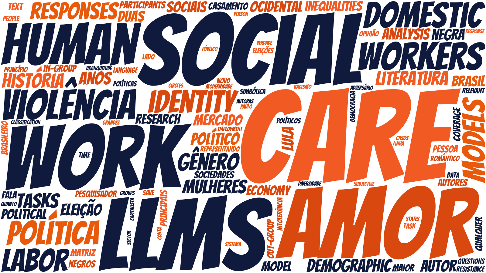

Cuidado
Gottfried (2025), sobre trabalho de cuidado e resistência.
- care
- work
- workers
- domestic
- labor
- inequalities
Os termos que mais se repetem em quatro artigos acadêmicos e duas matérias da Folha de S.Paulo.

Gottfried (2025), sobre trabalho de cuidado e resistência.
Fernandes e Moschkovich (2025), sobre amor romântico e branquitude.
Ziems et al. (2024) e Wang et al. (2025), sobre modelos de linguagem nas ciências sociais.
Dois textos da Folha: Angela Alonso e Mário Medeiros.
Como foi feita: palavras comuns em português e inglês, seções de referências e texto de interface das páginas da Folha foram removidos. Cada texto tem o mesmo peso (frequência relativa), para que os artigos longos não dominem. Sobrenomes dos autores dos artigos sobre LLMs foram ignorados. Formas diferentes da mesma palavra, como "cuidado" e "cuidados", contam separadamente, e os textos em português e inglês aparecem juntos.